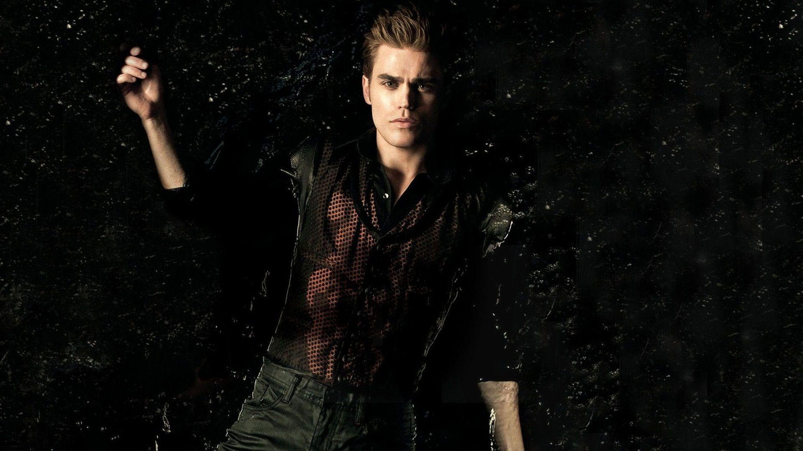
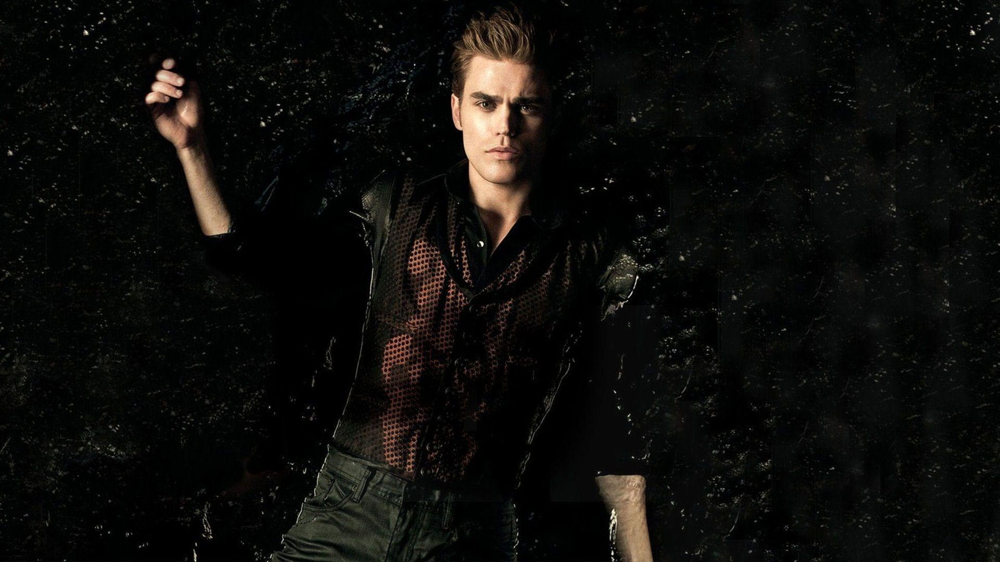

The Vampires Diaries
Damon
Damon Salvatore é um dos dois principais protagonistas masculinos da The Vampire Diaries . Damon era um vampiro de 178 anos e descendente distante de Silas, mas agora ele é humano, já que seu irmão mais novo, Stefan Salvatore , o injetou com a cura. Ele foi um grande antagonista na primeira parte da primeira temporada
Elena Gilbert
Elena Gilbert é uma menina doce que perdeu seus pais em um acidente e agora mora com sua tia Jenna e com seu irmão adotivo, Jeremy Gilbert . É a personagem principal feminina de The Vampire Diaries. Elena é uma garota de 18 anos que sofreu um acidente e uma médica usou sangue do vampiro Damon Salvatore para cura-lá, então quando Elena cai da ponte com seu melhor amigo Matt e ambos conseguem sair do carro, Elena morre e se torna uma vampira
Stefan
Stephano Fernando Salvatore foi o ex-namorado da protagonista Elena Gilbert (eles romperam o namoro definitivamente no episódio de número 7 da 4ª temporada ) e é um vampiro conflitante. Seu irmão Damon Salvatore, que também é um vampiro, o odeia e ele lhe prometeu uma vida de miséria. Ele é o principal antagonista masculino. Na verdade, existe